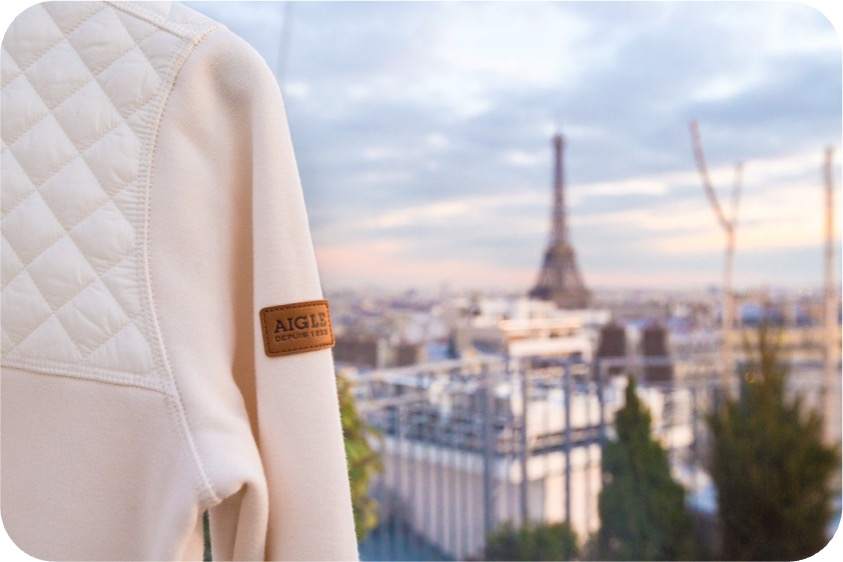
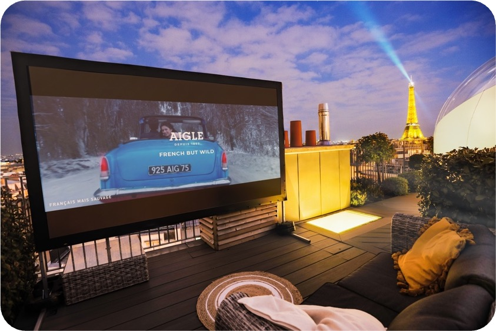

Objective
Back to projects

Aigle · 2019
Aigle - Le Nid Wild Love
Phygital, social media, influence, PR, brand content
Project completed as part of Lucie Ramon's previous professional background.

AiglePhygital, social media, influence, PR, brand contentExperience leadershipImage proof
AiglePhygital, social media, influence, PR, brand contentExperience leadershipImage proof
Case study
Context
Aigle wanted to refresh its brand through an immersive experience blending nature, urban lifestyle and strong social media resonance.
Lucie's role
- Designed the activation strategy: event, social media and influence.
- Created Le Nid concept: a unique night to win on Paris rooftops.
- Coordinated the Instagram contest and influencer experience.
- Monitored the digital media plan and PR coverage.
Visual material


Key figures
57K likes and 10.1K comments on one contest post
+6K new followers on @Aigle
176% engagement
Phara product sold out
Press coverage: Stratégies, Konbini, L'ADN, Voici...
For your brand
Design an activation combining events, influence and social media resonance.
Studio Madame-L structures the concept, talent search, production and content to turn a brand idea into a desirable, shareable experience.
Next reference